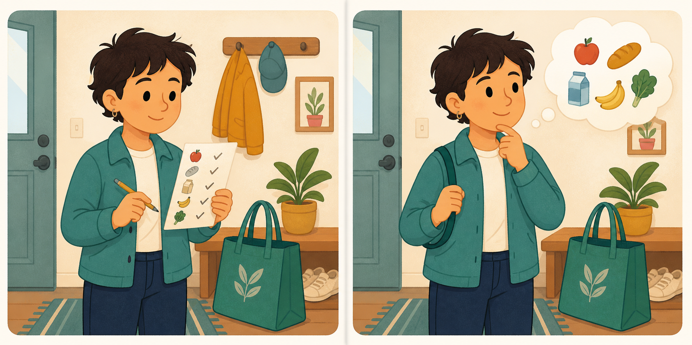

Visual personality quiz
Which side feels more like you?
Swipe toward the scene you prefer. Go with your first instinct.
Question 1 of 32
Drag the card, tap a side, or use the ← and → keys.
Your visual personality type
A useful snapshot, not a diagnosis.
Personality preferences can shift by context and over time. Use this result for reflection and conversation.